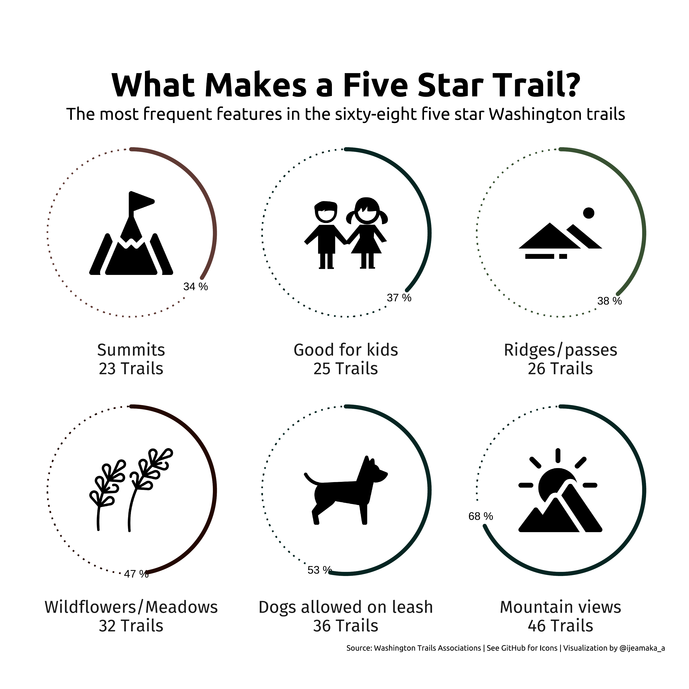

font_add_google(name = "Fira Sans", family = "fira")
font_add_google(name = "Ubuntu", family = "Ubuntu")hike_data <- readr::read_rds(url('https://raw.githubusercontent.com/rfordatascience/tidytuesday/master/data/2020/2020-11-24/hike_data.rds'))Filter the data for 5 star rating:
img <- c(
here::here("img", "washington_hikes", "dog.png"),
here::here("img", "washington_hikes", "flower.png"),
here::here("img", "washington_hikes", "kids.png"),
here::here("img", "washington_hikes", "mountains.png"),
here::here("img", "washington_hikes", "ridges.png"),
here::here("img", "washington_hikes", "summits.png")
)top_features <- feature_split %>%
map_df(function (x){
data.frame(
features = x,
count = sum(str_detect(top_hikes$features, x))
)
}) %>%
as.tibble()top_list = list()
for(i in 1:length(feature_split)){
top_list[[i]] = sum(str_count(top_hikes$features,
feature_split[i]))
}
names(top_list) = feature_splitdf_top_list = t(data.frame(top_list)) %>%
as_tibble() %>%
mutate(feature_name = row.names(.),
feature_name_clean = feature_split,
count = as.numeric(top_list),
percentage = round(count / 68 * 100, 0)) %>%
arrange(-count) %>%
slice(1:6) %>%
select(feature_name_clean, count, percentage) %>%
mutate(images = c(img[4], img[1], img[2],
img[5], img[3], img[6]),
label_name = paste0(feature_name_clean, "\n", count, " Trails"))
df_top_list$label_name = forcats::fct_reorder(df_top_list$label_name, df_top_list$percentage)df_top_features <- top_features %>%
mutate(percentage = round((count / 68) * 100),
label = paste0(features, "\n", count," Trails")) %>%
arrange(-count) %>%
slice(1:6) %>%
mutate(images = c(img[4], img[1], img[2],
img[5], img[3], img[6]))
df_top_features$label <- forcats::fct_reorder(df_top_features$label, df_top_features$percentage)showtext_auto()
ggplot(df_top_features) +
geom_image(aes(x = 0,
y = 50,
image = images),
size = .4) +
geom_text(
aes(x = percentage + 2,
y = 100,
label = paste(percentage, "%")),
size = 4
) +
geom_segment(aes(
x = percentage + 5,
xend = 100,
y = 100,
yend = 100,
color = features
),
linetype = "dotted",
linejoin = "mitre",
size = .8) +
geom_segment(aes(
x = 0,
xend = percentage,
y = 100,
yend = 100,
color = features
),
size = 2,
lineend = "round") +
facet_wrap(~label,
strip.position = "bottom") +
coord_polar() +
scale_color_manual(
values = c("#052522", "#052522",
"#052522", "#385132",
"#5f3a34", "#230801")) +
labs(
title = "\nWhat Makes a Five Star Trail?",
subtitle = "The most frequent features in the sixty-eight five star Washington trails",
caption = paste0("Source: Washington Trails Associations | See GitHub for Icons | Visualization by @ijeamaka_a")
) +
theme_classic() +
theme(
strip.background = element_blank(),
axis.ticks = element_line(linetype = "blank"),
legend.position = "none",
axis.text = element_blank(),
axis.line = element_blank(),
axis.title = element_blank(),
strip.text = element_text(family = "fira",
size = 18),
plot.title = element_text(family = "Ubuntu",
face = "bold",
size = 35,
hjust = 0.5),
plot.subtitle = element_text(family = "Ubuntu",
size = 18,
hjust = 0.5),
plot.caption = element_text(family = "Ubuntu",
size = 8),
plot.margin = margin(25, 25, 25, 25)
)